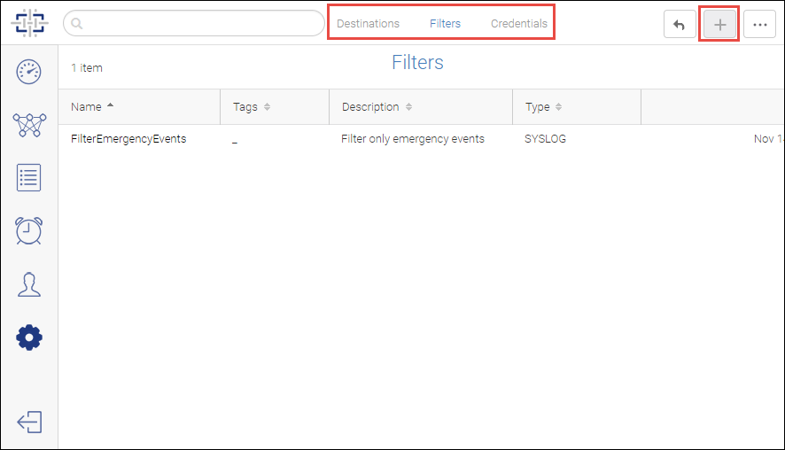

Forward SNMP Traps and Syslog Messages
-
Click the
Settings icon (
 ), and then select
.
), and then select
.
-
Click the
Filters tab at the top of the page, and then click the
Add button to add filters.
Figure 14
Filters page

-
Click the
Destinations tab at the top of the page, and then click the
Add button to add forwarding destinations.
If you want the same destination for both syslogs and SNMP traps, you must add that destination twice, once for syslogs and once for traps.
-
Click the
Credentials tab at the top of the page to add SNMPv3 credentials of the receiver who is allowed to receive the forwarded traps.